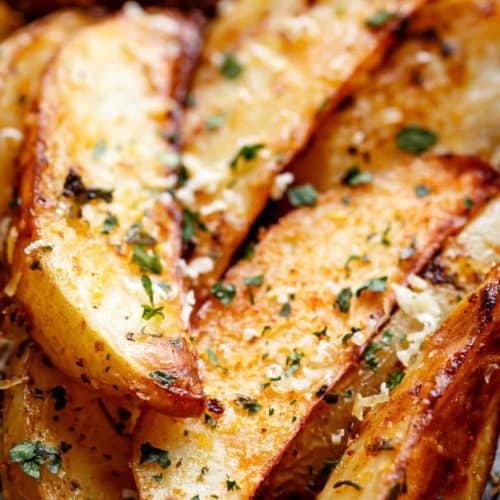

Wedges recipe

The crispiest potato wedges
This recipe is a culmination of my experiments to try and create the crispiest possible
wedges without too much hassle like deep frying and freezing.
I went through several iterations mainly in the pre-oven phase that included microwaving
and also soaking in cold water.
Ingredients
- Potatoes
- Spices
- Oil
- Baking soda
- Baking powder/Cornstartch mix
Steps
- Cut potatoes into wedges.
- Bring water to boil. Add salt and baking soda.
- Parboil potatoes for 10 minutes. Drain the water and give the potatoes
a good shake to fluff them up.
- Add oil, spices and the baking power/cornstarch mix to the potatoes.
- Bake at 220C with fan on until dark brown and crispy.